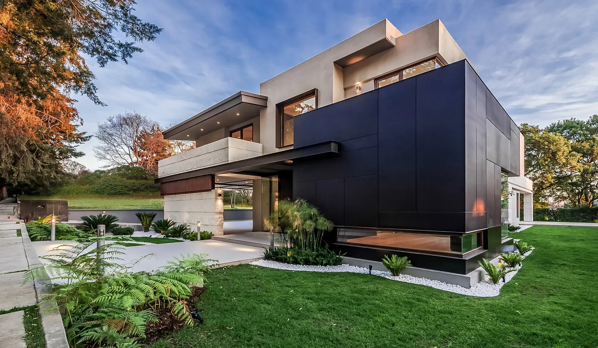
Proyecto
av. del club
Residencia


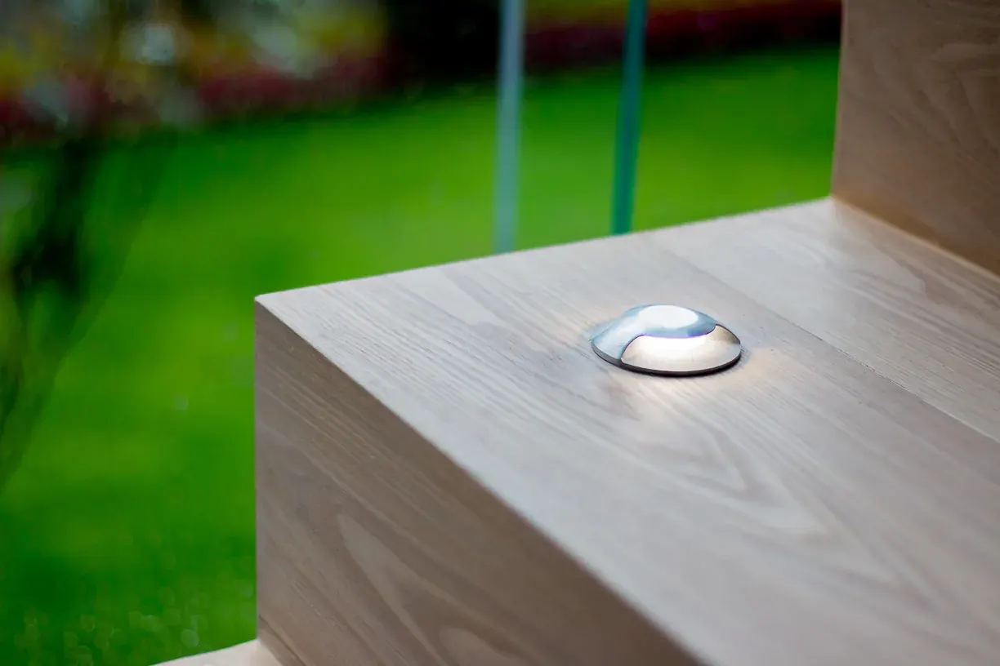

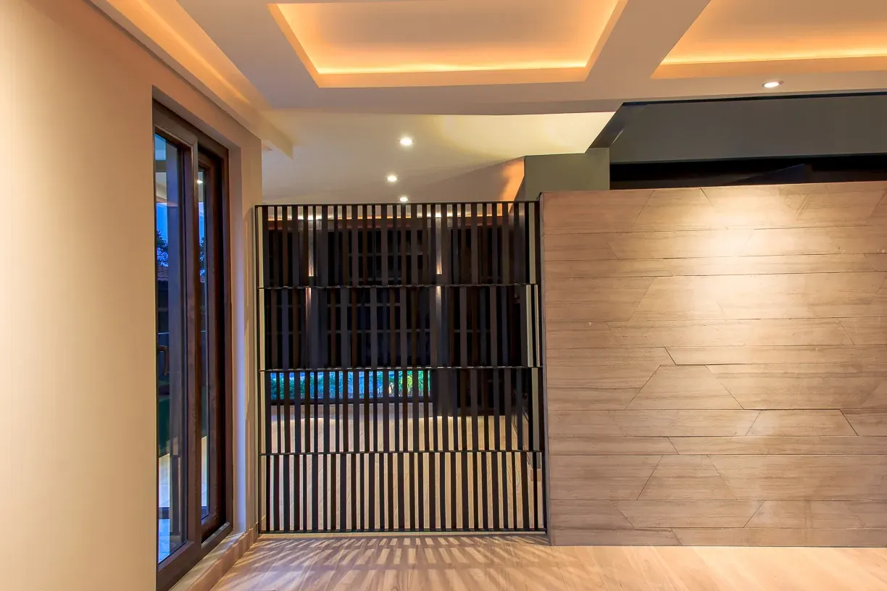
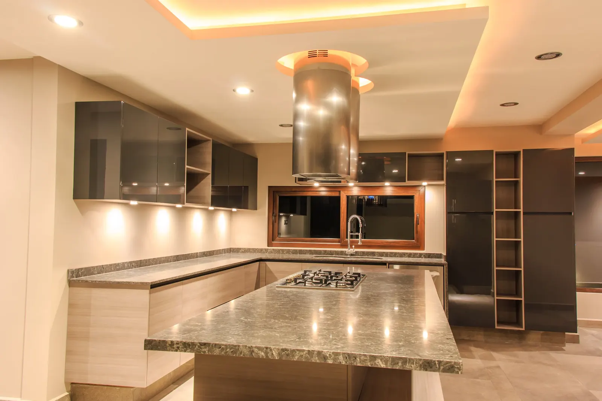
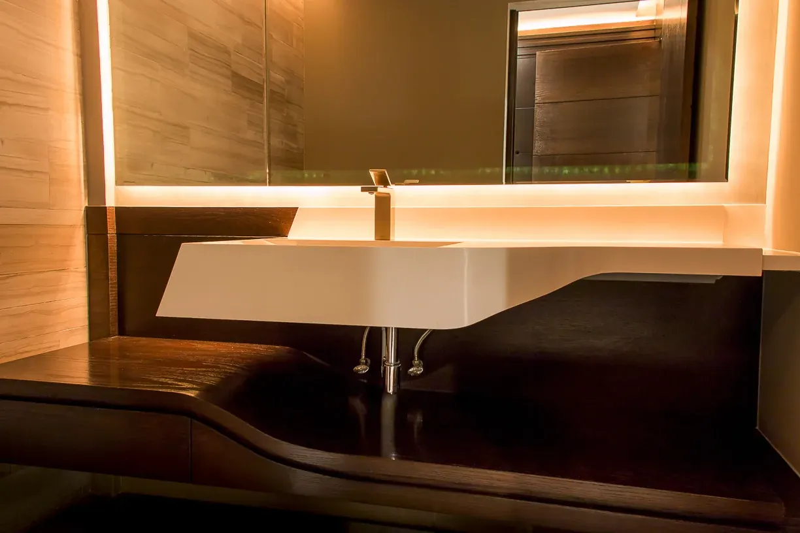
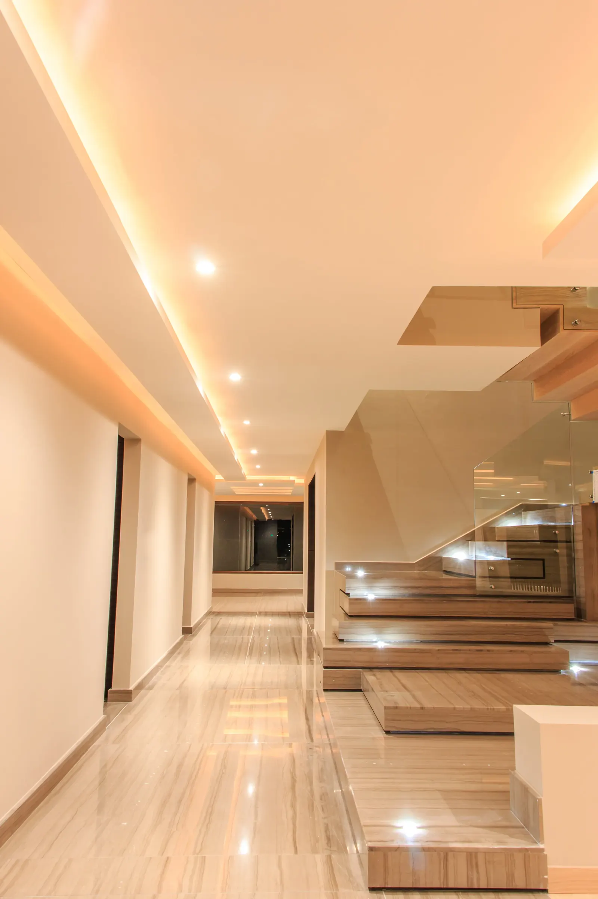
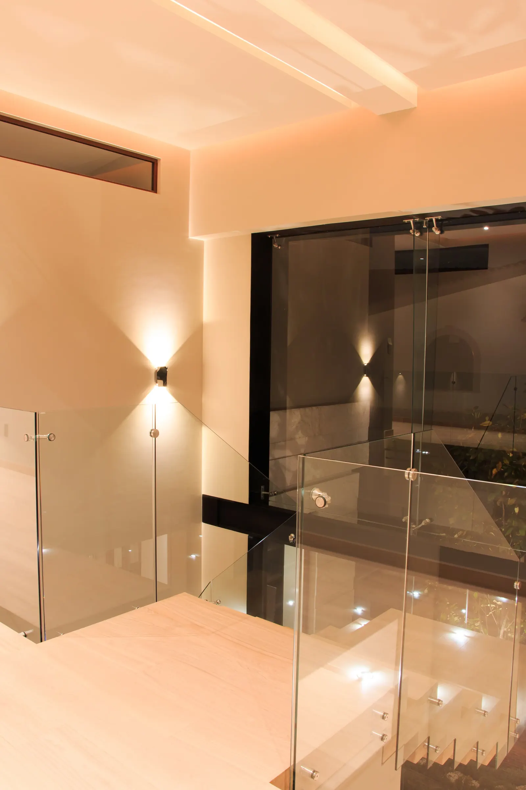
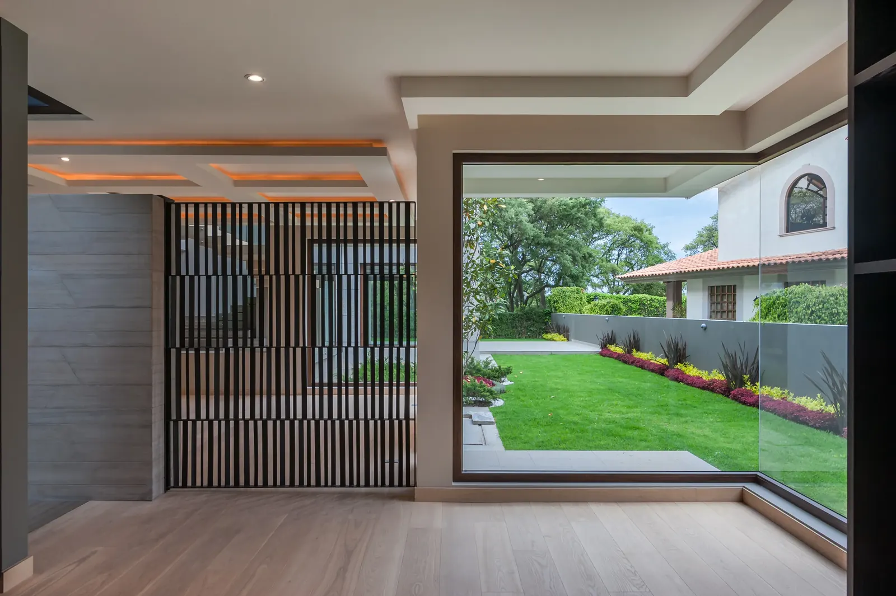
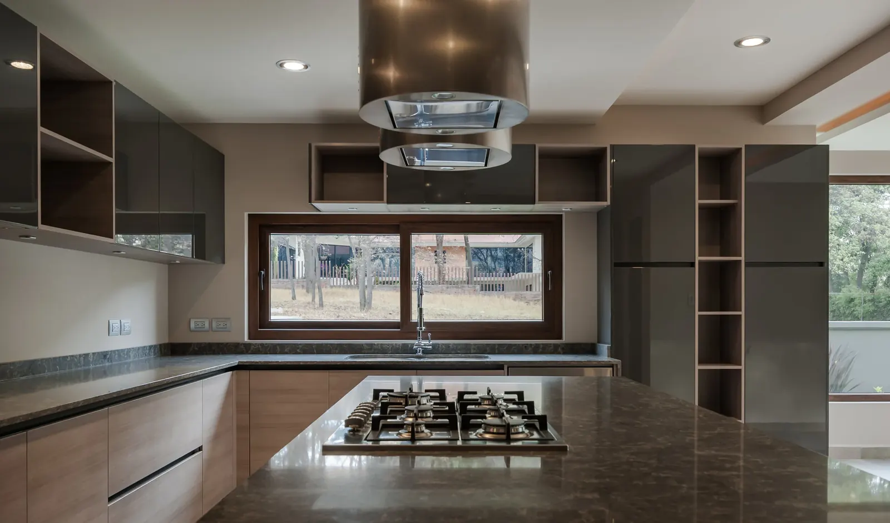
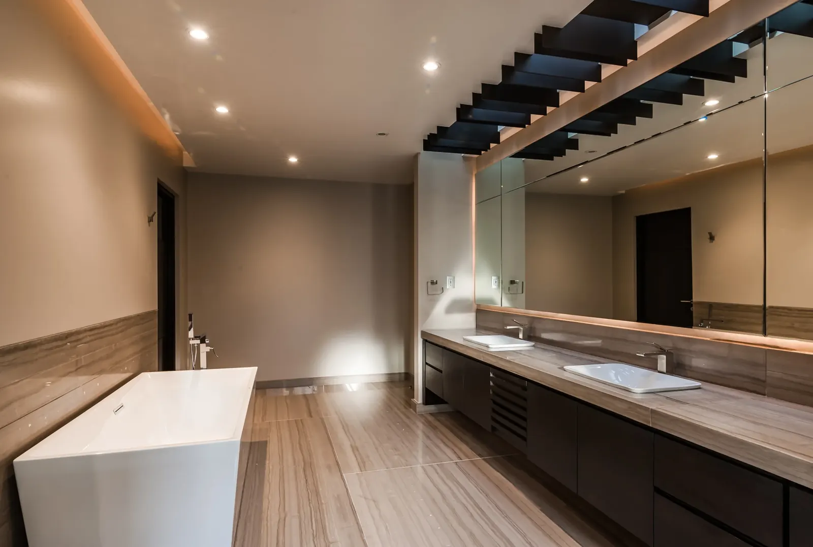
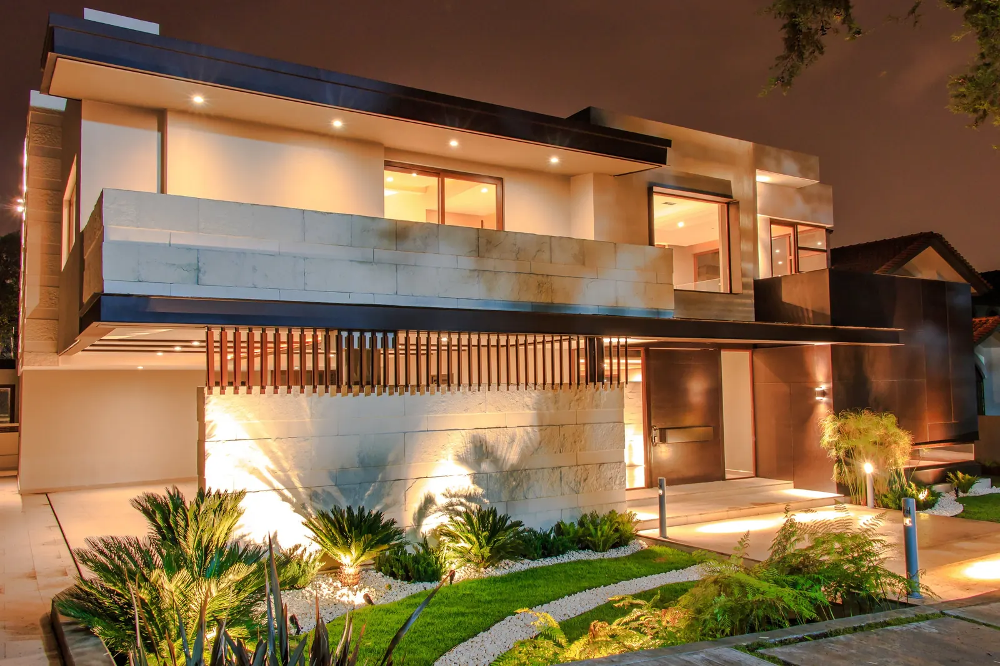
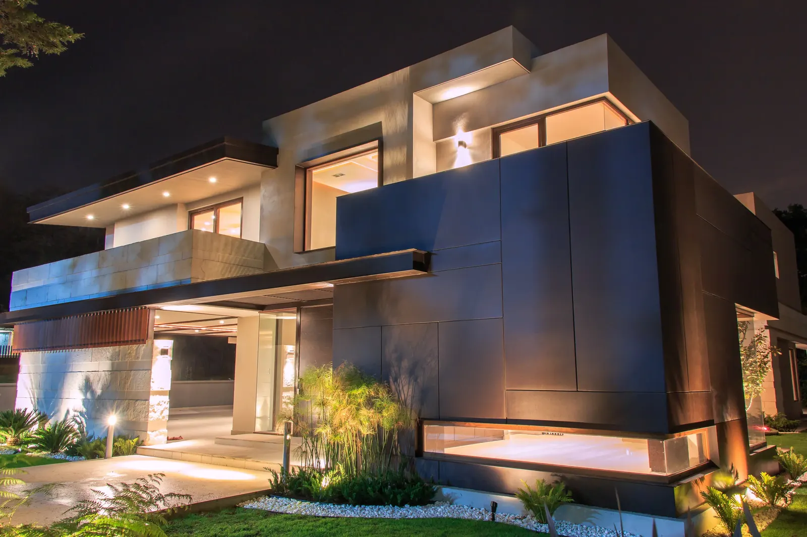
Primero la entrada: un cambio de escala que avisa que entraste a otro ritmo. Después, la secuencia de estancias que se van abriendo una a otra, con la luz natural como hilo conductor. Nada grita: todo está donde el cuerpo lo espera.
Siguiente proyecto
 siguiente proyecto: cantil
P-015
siguiente proyecto: cantil
P-015
así empieza también el tuyo
Cada trazo de esta galería empieza en una conversación sobre una forma de vivir. La tuya puede ser la próxima.
Agenda una primera conversación